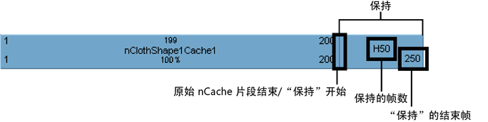
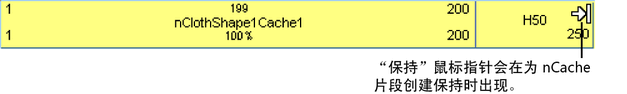
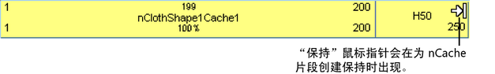
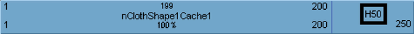

可以保持 nCache 片段，以便将缓存片段中的最后模拟状态冻结一段固定的时间周期。

保持是 nCache 片段扩展的一部分，最后模拟状态在此处保持一段特定的时间周期。保持使用字母 H 来表示。
提示： 无法在 nCache 片段之前创建保持。
但是，可以通过以下方法在 nCache 片段之前模拟保持：将第一帧从缓存片段分割出来，并将其向时间上位于之后的几帧上拖动，然后创建从单帧到缓存片段开始处的保持。
保持 nCache 片段
- 在场景视图中，选择要保持其缓存片段的对象。
- 在“Trax 编辑器”(Trax Editor)中，选择“列表 > 加载选定角色”(List > Load Selected Characters)。
所有当前对象的缓存都将在轨迹视图中显示为片段。
- 选择要保持的 nCache 片段。
- 执行下列操作之一：
 键拖动片段上部角点的热点以在缓存片段后创建保持。
键拖动片段上部角点的热点以在缓存片段后创建保持。- 在“通道盒”(Channel Box)中，为缓存片段设定保持通道值。
请参见保持。
编辑 nCache 片段保持的帧数
- 在缓存片段保持部分上 H 一侧的数字上双击鼠标左键 ()，然后为最后模拟状态在缓存片段中要保持的帧数键入一个新值并按 键。